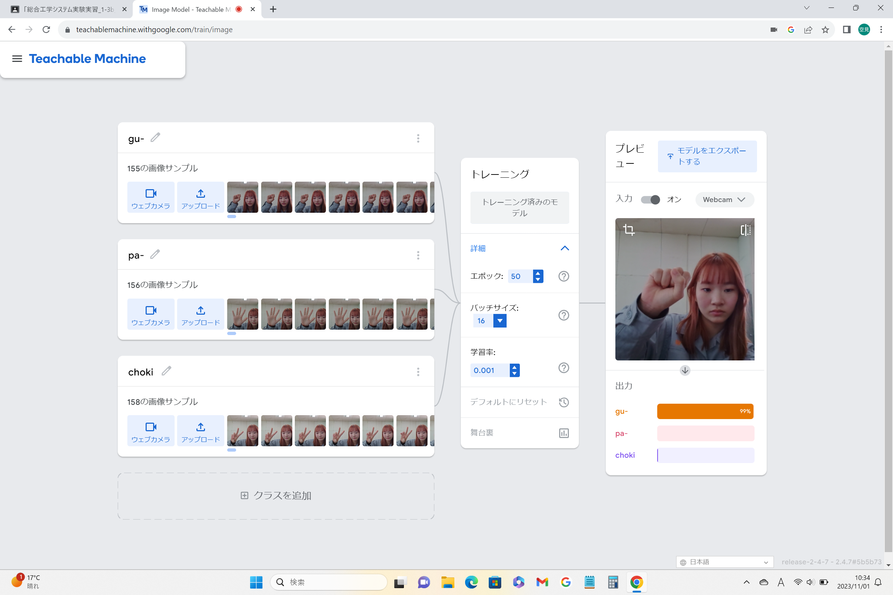
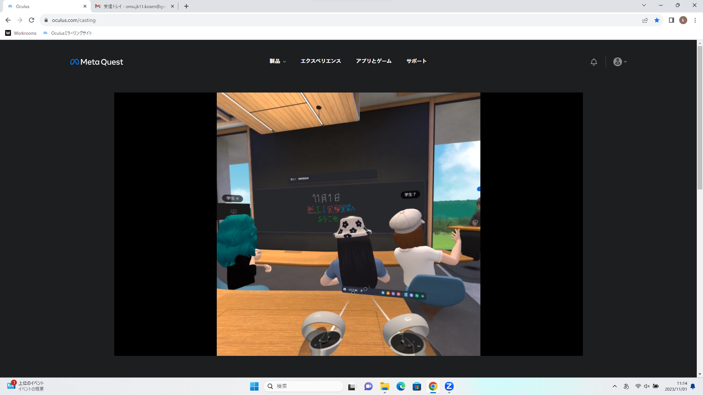

第2週目
2-1 １週目のレポートをHTMLで作る
１週目のレポート
1.内容
Githubを用いてhtmlで1週目のレポートを作成した。二枚の画像をアップロードし、授業で行った内容や、その時感じた感想を記入した。
2.感想
うまくいくか不安だったが、画像も貼り付けつけることができ、文も適した場所に表示できていたのでうれしかった。
2-2 機械学習体験

1.内容
カメラを使った画像を分類する機械学習を使ってグーとチョキとパーを判別する機械学習のモデルを作成した。
グーとチョキとパーの写真をそれぞれ約150枚撮って機械に学ばせ、カメラに写した手がどのポーズをとっているかをパーセント表示で判別できるようになっている。
2.感想
たったの150枚でどのポーズか判別できるのはすごいなと思った。
そして、左手だけでなく右手でも撮ったり、いろんな角度から撮影すればもっと正確に判別できるようになると思った。
2-3 VR（バーチャルリアリティー：Virtual Reality）会議室の体験

1.内容
Workroomsというアプリを使って仮想会議室に遠隔地からユーザーを参加させるメタバース体験をした。二人一組で行いVRゴーグルを装着する人とミラーリングPCを操作する人に分かれて作業を行った。
2.感想
体験入学の時にVRゴーグルを使ったため少し操作方法を覚えていた。みんなが離れたところにいるのにメタバース空間で同じ部屋にいて会話をしているのが違和感があったが面白かった。